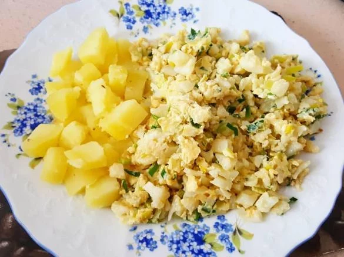

Jednoduchý recept na květákový mozeček se zeleninou a vejci.
Květák rozebereme na části a uvaříme ve vodě. Potom ho scedíme a pokrájíme na menší kousky.
Cibuli nakrájíme nadrobno a zpěníme ji na másle.
Přidáme pokrájený květák, osolíme, okořeníme mletým kmínem a pepřem, poté na cibulce krátce podusíme.
Ke květáku vmícháme osolená rozšlehaná vejce, a necháme je srazit.
Na talíři ozdobíme sekanou zelenou petrželkou.